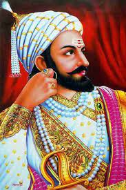
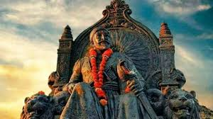
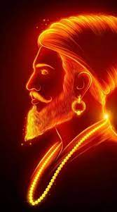

The Warrior King
Chatrapati Shivaji Maharaj, the legendary Maratha warrior, was a visionary leader and a symbol of courage and valor.
Born in 1674, Shivaji Maharaj established the Maratha Empire and pioneered the concept of "Swaraj," leading his people with unmatched strategic brilliance.
His military acumen, coupled with his deep respect for justice and inclusivity, continues to inspire generations.
"A strong nation, like a strong person, can withstand challenges and remain true to its core values."
This webpage pays homage to Shivaji Maharaj, a true hero of India's history, whose legacy echoes through the ages.
- Prashant Shinde